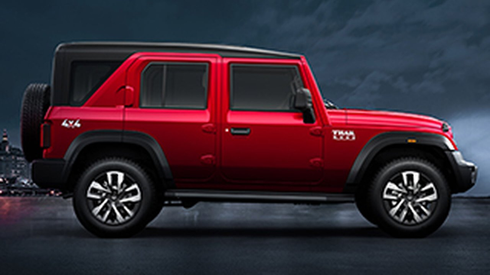
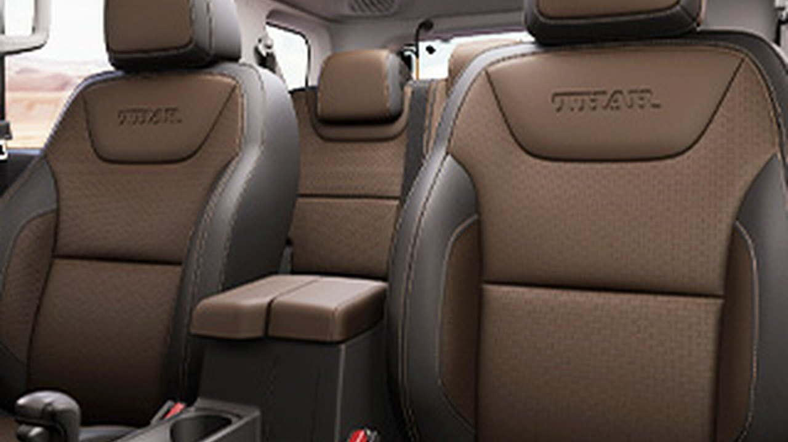
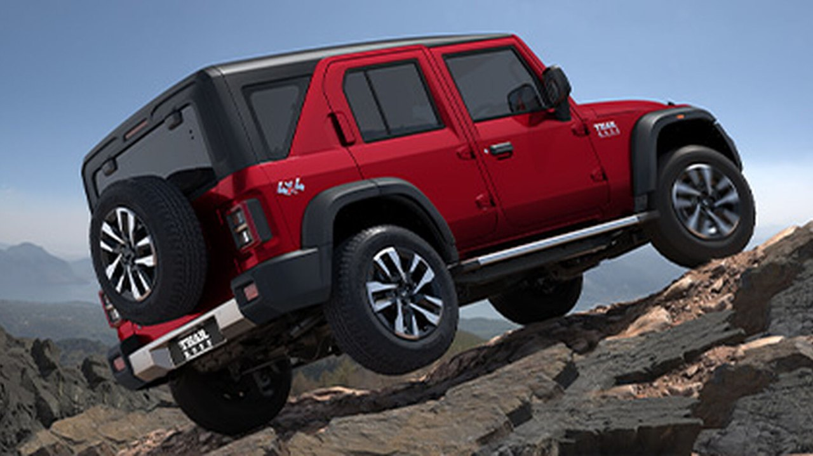
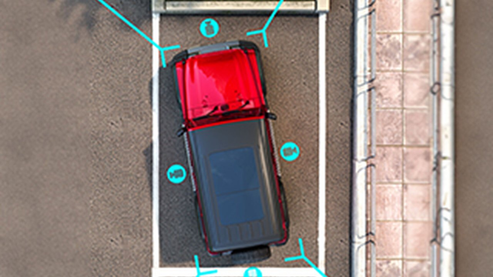
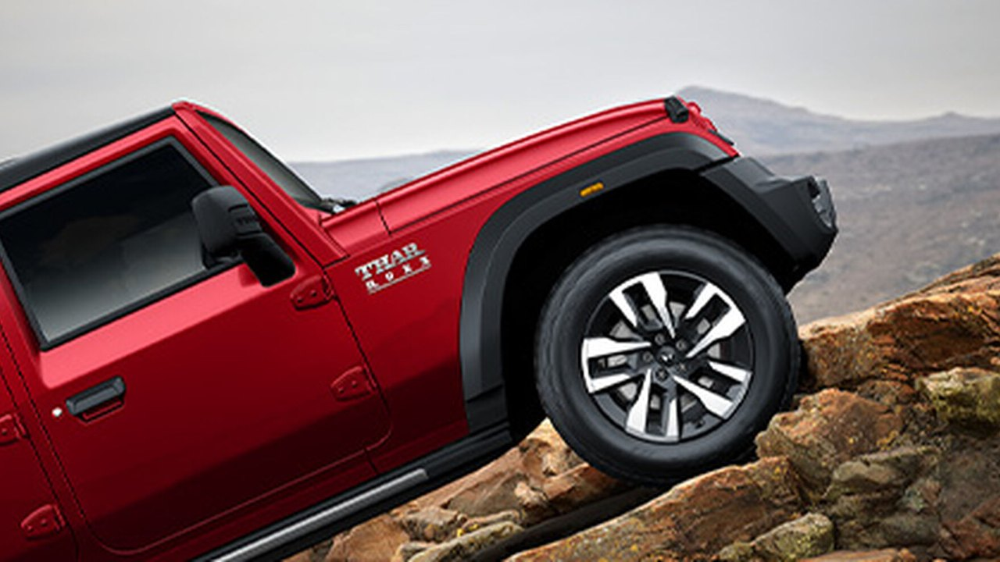

Toyota Hilux 2026: What’s Changed, Price and 4x4 Verdict
By Gagan Mishra

Two extra doors make the Thar Roxx much easier to justify to a family. The question for this review is narrower: is the diesel 4x4 worth paying for, or are you buying hardware you will never use?
This review uses Mahindra’s published prices, the Bharat NCAP report, current listings and Autocar India’s review and long-term test, not our own test. Prices and specifications were checked on 21 November 2026. See our Review Methodology for how we separate editorial assessment from measured testing.
The Roxx 4x4 is a genuinely capable off-roader that is also safe and roomy enough for family use. The AX5L 4WD automatic is our pick: it has the stronger diesel tune, the full 4x4 hardware and ADAS. If you won’t use low range, the cheaper rear-wheel-drive Roxx or a regular SUV will ride better and cost less to run.
| 4x4 Version (diesel) | Gearbox | Ex-Showroom Price |
|---|---|---|
| MX5 4WD | 6-speed Manual | ₹19.42 lakh |
| AX5L 4WD | 6-speed Automatic | ₹21.67 lakh |
| AX7L 4WD | 6-speed Manual | ₹22.12 lakh |
| AX7L 4WD | 6-speed Automatic | ₹23.52 lakh |
Four-wheel drive is offered only with the 2.2-litre diesel; the petrol Roxx is rear-wheel drive only. The AX5L and AX7L automatics get a stronger 175 hp, 400 Nm tune, and the AX5L 4WD AT gives you that tune and the full 4x4 hardware for ₹1.85 lakh less than the AX7L. CarWale reports that an updated Roxx has been spotted testing. Mahindra has not announced it, but it is worth asking your dealer before you commit.
The Roxx keeps the Thar’s upright, square look and the five-door body makes it more useful without diluting it. At 4,428 mm long on a 2,850 mm wheelbase, it is far easier to live with than the three-door Thar, but it is still tall: passengers climb up into the cabin, and that matters for older family members on every trip. Ground clearance is 226 mm.

The rear doors are the big practical gain. Autocar India found the rear seat has ample legroom and good thigh support and is wide enough for three adults, while the luggage area is surprisingly useful for a Thar. Autocar India lists the boot at 447 litres. Its long-term test also noted cabin quality niggles, including a broken AC vent.

Six airbags are standard. Higher trims add a 10.25-inch touchscreen and 10.25-inch digital instruments, a panoramic sunroof, ventilated front seats, Harman Kardon audio, a 360-degree camera and a Level 2 driver-assistance suite. CarDekho notes the AX5L already includes ADAS. Autocar India’s long-term car had its instrument cluster go blank once, though it recovered after a restart.
For four-wheel drive you need the 2.2-litre diesel. The 4x4 system has high and low range and an electronic locking differential.
| Engine | Power / Torque | Transmission Options |
|---|---|---|
| 2.2L mHawk Diesel | 152 hp / 330 Nm | 6-speed Manual or Automatic; RWD or 4x4 |
| 2.2L mHawk Diesel (AX5L/AX7L AT) | 175 hp / 400 Nm | 6-speed Automatic; RWD or 4x4 |
| 2.0L mStallion Turbo-Petrol | 162 hp / 330 Nm (MT), 177 hp / 380 Nm (AT) | 6-speed Manual or Automatic; RWD only |
Autocar India found the diesel automatic very punchy, which is fun in short bursts but tiring on long highway runs. Keeping below 100 km/h needs a light, tense right foot. Its long-term car returned only 10 and 11.8 km/l on highway runs, which is poor for a diesel midsize SUV. Expect less in town.
| Off-road figure | Thar Roxx |
|---|---|
| Ground clearance | 226 mm |
| Water wading | 650 mm |
| Approach / departure / ramp-over | 41.7° / 36.1° / 23.9° |
| Wheelbase / length | 2,850 mm / 4,428 mm |
Off the road, those figures and the low-range gearbox make the Roxx extremely capable. Autocar India used its long-term car as a support vehicle at its off-road day and found it sailed through.

This section draws on the published Bharat NCAP report and Autocar India’s review and long-term test, not our own, in line with our Review Methodology. Bharat NCAP gave the Thar Roxx five stars from November 2024, with 31.09 out of 32 for adult protection and 45 out of 49 for child protection. The frontal offset test scored 15.09 out of 16 and the side barrier test a full 16. That is an excellent result for a body-on-frame off-roader.
The new-generation ladder frame, multi-link rear suspension with a Watt’s linkage and electric power steering make the Roxx far more civilised than the three-door Thar. Autocar India found the ride on the softer side, but its long-term test showed the limits. At low city speeds, potholes and undulations come through harshly, because the suspension is built for off-road abuse.

Following our Review Methodology, we rate eight criteria on paper, using official specifications, prices and published test evidence rather than our own driving, then average them into a Spec Score.
| Criteria | Score |
|---|---|
| Design | 8.5 / 10 |
| Performance | 8.5 / 10 |
| Mileage Potential | 6.5 / 10 |
| Comfort | 7.5 / 10 |
| Features | 8.5 / 10 |
| Safety | 9.0 / 10 |
| Practicality | 7.5 / 10 |
| Value for Money | 8.0 / 10 |
| Spec Score (average) | 8.0 / 10 |
Design: The Thar’s character in a more usable five-door shape.
Performance: Punchy diesel and genuine low-range 4x4 ability.
Mileage Potential: Autocar India’s long-term car managed only 10–11.8 km/l on the highway.
Comfort: Much better than the three-door Thar, but harsh over city potholes.
Features: Big screens, sunroof, ventilated seats and ADAS on higher trims.
Safety: Five stars from Bharat NCAP, with 31.09/32 adult and 45/49 child scores.
Practicality: A roomy rear seat and a usable boot, but a tall step-in.
Value for Money: Strong 4x4 value, especially the AX5L automatic.
The Roxx 4x4 delivers what most SUVs only suggest: real off-road ability, family space and a five-star crash rating. The AX5L 4WD automatic is the sweet spot, and the AX7L’s extra comforts are optional, not essential. Be honest about how you will use it, though. If the low range will stay untouched, you will pay for it in fuel and ride comfort every day, and a rear-wheel-drive Roxx or a road-focused SUV will serve you better. With an update reportedly on the way, check before you buy.

What is the price of the Thar Roxx 4x4?
CarDekho lists the diesel 4x4 versions from ₹19.42 lakh (MX5 4WD manual) to ₹23.52 lakh (AX7L 4WD automatic), ex-showroom. The full Roxx range starts at ₹12.52 lakh.
Is the Thar Roxx petrol available with 4x4?
No. Four-wheel drive comes only with the 2.2-litre diesel.
What is the Thar Roxx Bharat NCAP rating?
Five stars, with 31.09 out of 32 for adults and 45 out of 49 for children.
What mileage does the Thar Roxx diesel give?
Autocar India’s long-term diesel automatic returned 10 and 11.8 km/l on highway runs. Expect less in the city.
Which Thar Roxx 4x4 should I buy?
The AX5L 4WD automatic. It has the stronger 175 hp diesel tune, the full 4x4 hardware and ADAS, for less than the AX7L.
Is a new Thar Roxx coming?
CarWale reports that an updated Roxx has been spotted testing. Mahindra has not announced it.
Links checked 21 November 2026. Driving impressions and fuel figures are from Autocar India, as named in the text. We have not driven this car.
By Gagan Mishra

By Gagan Mishra

By Gagan Mishra